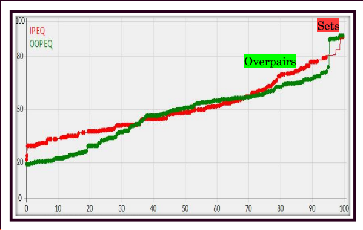
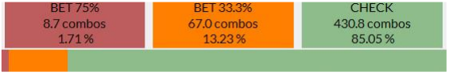
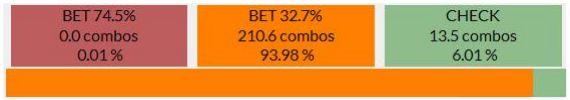
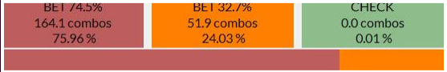

Range and Nut Advantage
Range advantage
Having a significantly large range advantage can be achieved with a combination the following range vs. range attributes.
Having more very high equity hands as a concentration of your range than your opponent does of his/hers.
Having more quite high equity hands as a concentration of your range than your opponent does of his/hers.
Having more less very low equity hands as a concentration of your range than your opponent does of his/hers.
Thinking about entire ranges vs entire ranges can be confusing and there is nothing worse than an overwhelmed and cluttered mind at the tables.
Before we install the right thought processes, let's uninstall the wrong ones.
The Nut Obssession Fallacy
You will sometimes hear poker players to have a "Range Advantage" and then proceed to justify it by listing their most nutted hands.
We need to remember that low equity hands bring down the equity of our range just as much as high equity hands bring up the equity of our range.
Just as having a lot of medium equity hands in you range will move your equity towards the middle.
The whole range vs range picture is what is important for determining Range Advantage
The Total Amount Fallacy
The Total Amount Fallacy occurs when we ignore how concentrated good hands are and just talk about how many absolute combos of them we have.
The Range Advantage Therefore Bet Fallacy
Having a large range advantage makes our range want to bet more often on the flop, but generally speaking on the turn and river we must polarise our betting range to some extent.
Example 1
CO has total equity of 57.5% and thus big range advantage. Despite having a big range advantage we cannot bet this middling hand. It would be a polarisation error.
The Range Disadvantage Therefore Check Fallacy
Having a large range disadvantage means we will usually check when out of position on the flop, but generally speaking on the turn and river we must polarise our betting range to some extent.
Example 2
CO has total equity of 43.5% and thus range disadvantage. Despite having a range disadvantage we still have to bet. Urgency is too high with a hand that needs to build the pot.
Nut advantage
Having a significantly large nut advantage can be archieved by having very high equity (85%+) hands in your range at a higher concentration than your opponent has them in his range.
The Literal Nuts Fallacy
Don't take "nuts" too literally. It's more powerful to have 24 combos of 90% equity hands than 3 combos of 96% equity hands.
Nutsaphobia
Just because villain has more nuts than you do or has the nuts a relevant amount of the time doesn't mean you can't still bet hands for the purposes we have discussed. Don't fear the worst every time just because it is not impossible.
Recognising Range Advantage
On this flop, CO vs BB, the in position player has a sizable range advantage. PIO 2 tells us that his range boasts total equity of 55.226.
This comes from three main sources:
1.CO has unique hands (ones his opponent cannot have) which are very high equity. This is the part of range advantage which we can describe as nut advantage. It contributes to his range advantage but is not identical to it. For example: KsKh with 80.16% equity.
2. CO has more combinations as a percentage of his range of top pair and second pair. These combos will sometimes get 3-Bet by the player in the BB so he has them less often than CO does. These hands are quite high equity and strengthen a range of which they are a part. For example: QsJs with 73.43% equity.
3. CO has less combinations as a percentage of his range of low suited cards like K-rag and Q-rag suited. These very low equity hands will be fairly abundant in BB's range. Such hands bring down the equity of the range containing them. For example: 7d5d with 13.98% equity.
Recognising Nut Advantage
A large nut advantage exists when as a concentration of our range we have a lot more very high equity hands than our opponent. Remember, these do not have to be the absolute literal nuts.
In this situation, the in-position player has a large nut advantage despite having less combos of the literal nuts.
Example
Here UTG cannot have 33 or 22 and BU can and both players can have 99 at full frequency. But sets are an irrelevant part of ranges. BB's range here spans 202 combos and 22/33 are only 6 of them (3%)
Meanwhile UTG's range spans 224 combos and JJ-AA which are hands he has much more often than BB are 24 of them (11%) These hands have around 80% equity and are entitled to more than the pot in EV. Thus UTG has a sizable nut advantage.
We can use PIO's range explorer tool to explore wheter one player has large nut advantage.
Range Advantage and Flop Betting Frequency
Whenever we have a large range advantage on the flop, we want to start betting more of our range. This means that we will be betting a less polarised range in spots where our range has a lot more equity then villain's does.
Remember our three purposes of betting? Value, Denial and Bluff.
Bluffing and Denial both benefit from Villain's range being weaker because Villain has to fold more frequently when he lacks the strength to continue the expected mathematical amount of the time.
Value
There are more hands we can value bet when Villain's range is weak. Weaker absolute hand strength holdings become stronger holdings now and we get to value bet more thinly.
Bluffing
Since fold equity is higher than normal when we have a range advantage our bluffs are more profitable so we want to make more of them.
Denial
Since Villain's range is relatively weak, a lot of his combos will be air hands that have some live re-draw. We will benefit more now from the bonus of denial since we will run into live weak hands that fold quite frequently.
Nut advantage and Flop sizing
Recall that the higher equity our value betting candidate the bigger the sizing it can consider using and the higher the investment ceiling for that hand across all streets.
When we have a large nut advantage we have more hands in very high equity regions, therefore our range will want to build a large pot more often. Accelerating pot growth immediately on the flop is one way of catering to these hands.
Big or Small Strategy
When we have a large nut advantage we shall adopt as our only flop sizing.
When we do not have a large nut advantage we shall adopt as our only flop sizing.
Note that we are NOT asking "Who has the nut advantage?", because a small nut advantage isn't enough to make us size up on the flop.
We are asking: "Do we have a large nut advantage?", because that is sufficient for sizing up on the flop.
Small R.A / Small N.A
When we have only a small range advantage and small nut advantage. Our range will bet infrequently (more polarised) and use .
Example
The Frequency Controls Sizing Fallacy
You might hear people say something like:
But this mistakes correlation for cause. We very often have the combination of nut advantage but no range advantage when we are barrelling turns etc. but this is not always true on the flop.
Small R.A / Big N.A
When we have only a small range advantage and big nut advantage. Our range will bet infrequently (more polarised) and can use bigger size .
Example
BU has a large nut advantage here, allowing him to adopt B75 as his sizing of choise.
BB has equalised on this flop in terms of range advantage since the texture connects with a lot of his unique hands.
Meanwhile some of BU's unique hands such as two big cards, have dropped significantly in equity on this texture.

Big R.A / Small N.A
When we have only a big range advantage and small nut advantage. Our range will bet frequently and for smaller size .
Example
Here MP enjoys a huge range advantage and can pretty much always bet this flop, but this does not come from nut advantage since both players have a similar concentration of Qx.
MP's range advantage comes from having less trash / low cards.
Big R.A / Big N.A
When we have big range and nut advantage, we will bet big and frequently.
Example 4 - Big R.A / Big N.A
A spot where both the range and nut advantage is hugely in UTG's favour.
The best Jacks and Overpairs are very powerful hands on a board that is so hard to hit. While BB has more trips, these hands are scarce enough that they barely matter.